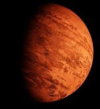

Главная

Колонизация планет Cолнечной системы и их спутников |
||||||||||||||||
|
Марс Параметры:
Методы терраформирования МарсаУправляемое обрушение на поверхность Марса кометы, одного крупного или множества малых ледяных астероидов из Главного пояса или одного из спутников Юпитера, с целью разогреть атмосферу и пополнить её водой и газами. Выброс в атмосферу парниковых газов, например, углекислого газа, аммиака, метана. В свою очередь, чтобы перевести в атмосферу большое количество углекислого газа и воды, можно растопить полярные шапки, для чего нужно повысить температуру поверхности Марса на 4°С. Для запуска механизма магнитогидродинамического динамо, аналогичного земному, необходимо, чтобы внешнее ядро планеты находилось в жидком состоянии. Высказывались идеи, что этого можно добиться с помощью серии термоядерных взрывов на большой глубине вблизи ядра, либо пропускания через ядро сильного электрического тока, который вызовет нагрев до температуры плавления. Можно создать искусственное магнитное поле с помощью прокладки вокруг планеты кольца из сверхпроводника с подключением к мощному источнику энергии. Существует проект NASA по тестированию возможности создания герметичных «биокуполов» («biodomes»), под которыми марсианская почва может быть заселена колониями фотосинтезирующих цианобактерий и зелёных водорослей, — потенциальной основы будущей пригодной для жизни экосистемы. Техногенная деятельность — выброс парниковых газов атомными электростанциями и транспортом, сжигание ископаемого топлива, — которая приводит к негативным последствиям для климата на Земле, для терраформирования Марса может оказаться полезной. Углубление долины Маринера до тех глубин, когда гравитация сможет создать там из остатков атмосферы пригодное для дыхания давление («атмосферный стакан»). Различные умозрительные проекты называют величины от 30 до 60 километров. Производство кислорода напрямую из местной атмосферы путём разложения углекислого газа с помощью низкотемпературной плазмы. Плюсы и минусыМарс более пригоден для жизни человека, чем любая другая планета, и даже Луна. Колонизация этой планеты позволить получать огромной кол-во ресурсов из ее недр. Так же это будет огромным толчком для освоения других миров. НО! Атмосфера Марса очень тонкая. Её плотность составляет около 1% от земной. Это создает проблемы для посадки тяжелых космических аппаратов на поверхность. Таким образом, требуется специально разработанная система торможения и посадки. Используемые в настоящее время автоматические системы посадки на Луну или Марс не могут быть применены в случае доставки тяжёлого груза. Воздействие марсианской гравитации на здоровье человека еще не изучено, и трудно предсказать, позволят ли условия на Марсе поддержать человеческую жизнь достаточно долго. Марсианские пылевые бури – это явление, которое также необходимо учитывать при колонизации. Эти бури снижают количество солнечной энергии, достигающей поверхности планеты. ВыводыНеобходимо отметить, что практически все вышеперечисленные действия по терраформированию Марса на текущий момент являются не более чем «мысленными экспериментами», так как в большинстве своём не опираются на какие-либо существующие в реальности и хотя бы минимально проверенные технологии, а по приблизительным энергозатратам многократно превышают возможности современного человечества (даже включая водородную бомбу, возможности которой для таких мощностей рассчитаны до сих пор не были). Поэтому предсказать их последствия весьма затруднительно. Колонизация Марса является сложной задачей как с экономической, так и с технологической точки зрения. Однако предпринимаются усилия для решения проблем и преодоления препятствий. |

Марс 
|
|||||||||||||||

© Сайт проекта колонизации планет Солнечной системы 2020 -
|
||||||||||||||||